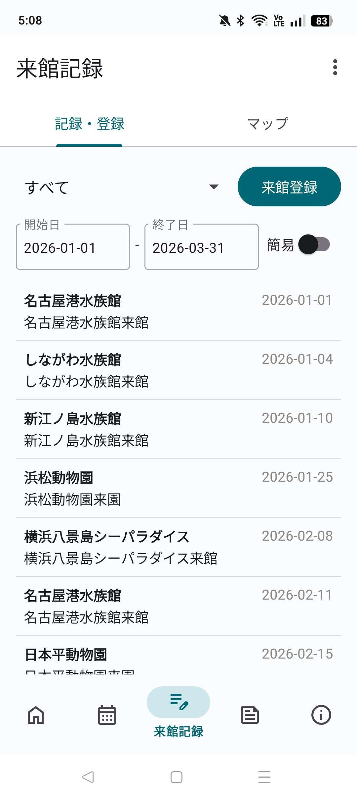
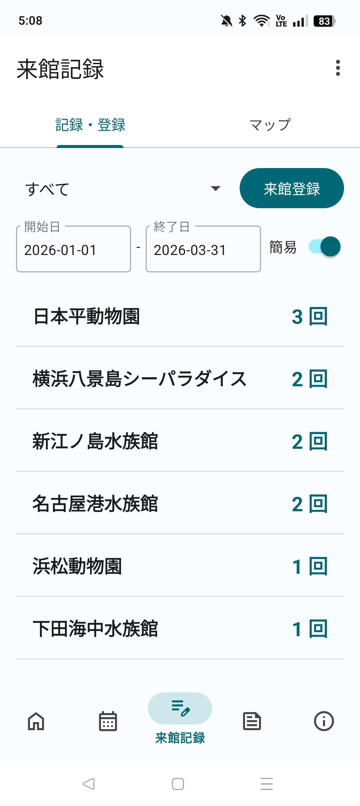
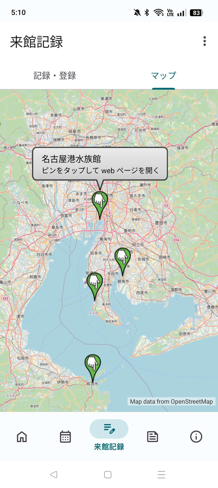

投稿者: 坂東入香
いつも坂東入香アプリをご利用いただき、ありがとうございます。
この度，新規機能の実装と改善を進め，より良いユーザーエクスペリエンスを提供するため，新たなバージョンをリリースしました。
以下のリンクからアプリをダウンロードいただけます。インストール方法はインストールマニュアルをご覧ください。
来館記録の実装，画面や UI の改善，保守性の向上を行いました
位置情報をもとに訪問館を記録し，記録された来館記録を表示します。
来館登録は，右上の「来館記録」ボタンから行えます。来館登録を行うためには，位置情報へのアクセス許可と有効化が必要です。 なお，記録された来館記録は消去できません。また，編集可能な項目はイベント名，メモのみです。
来館記録の絞り込みは，水族館名および期間で可能です。

「簡易」スイッチを ON にすると，水族館ごとの訪問回数を表示できます。

水族館の所在地を表示できます。表示される園館は来館登録が可能な園館のみです。 来館登録が可能な園館は，今後，拡充してまいります。

今後も皆さまのご意見を取り入れながら、アプリを改善していきたいと考えています。
「この園館もスクレイピングしてほしい」「こんな機能が欲しい」「ここを直してほしい」など、いつでもお気軽にお知らせください。
また，今回のアップデートでは，大幅に機能を追加したため，バグが多数存在する可能性があります。 もしバグを見つけた場合は，お知らせいただけると幸いです。